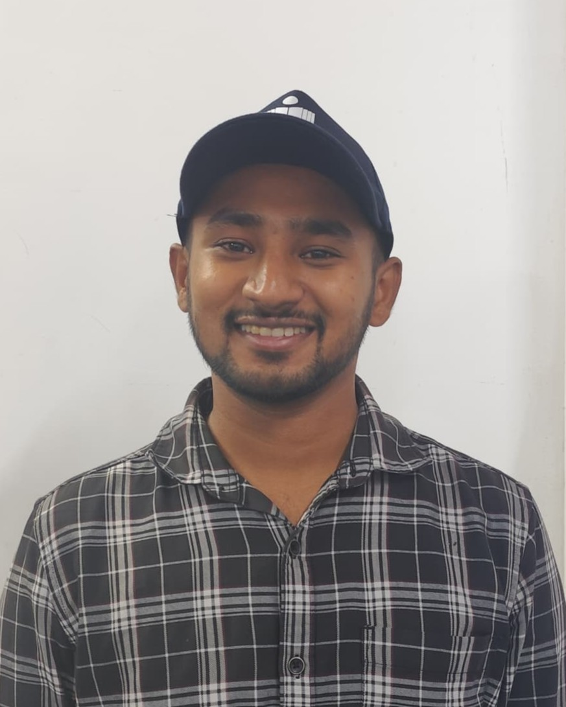
Mr. Saurabh Dubey
Roll No. ai25mtech12003
Autonomous Ground Vehicle
Current
Mr. Karthikeya
Roll No. ee25mtech12019
Drones
Current
Mr. Hemanth
Roll No. ee25mtech12006
Drones
Current
Mr. Vignesh Ramkrishnan
Roll No. sm25mtech12002
LiDAR-Camera Sensor Fusion based Navigation for Autonomous Vehicles
Current

Mr. Tarun Kumar
Roll No. sm25mtech12001
Drones
Current
Mr. Manikanta Sai
Roll No. Sm24mtech14006
Electric Vehicle
Current

Mr. Daniel
Roll No. sm24mtech12002
CAN Implementation
Current
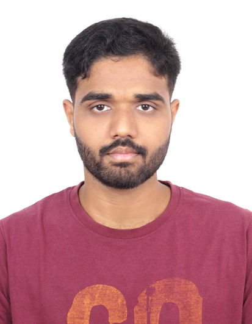
Mr. Pavan
Roll No. ee24mtech12009
BVLOS Operation
Current
Mr. Raju S
Roll No. sm24mtech12001
Small Drone
Current
Mr. Adithya Srinivas
Roll No. ai24mtech12012
Text Classification
Current
Ms. Bhavani
Roll No. ee24mtech02001
Autonomous Parking
Current
Mr. Vishnu Swathik
Roll No. ee24mtech02004
Real-time LiDAR and camera based navigation
Current
Mr. Sai Kiran
Roll No. ai24mtech02003
Hyperspectral image data analysis for Agriculture applications
Current
Mr. Yuvraj Chowdary Makkena
Roll No. ai23mtech02003
Building Edgecloud for Autonomous Navigation Vehicles
Current
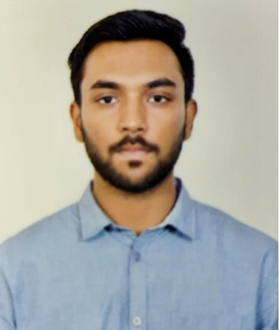
Mr. Rakshith Ram AC
Roll No. sm22mtech12003
Lidar and Camera based navigation for autonomous UGVs
Current
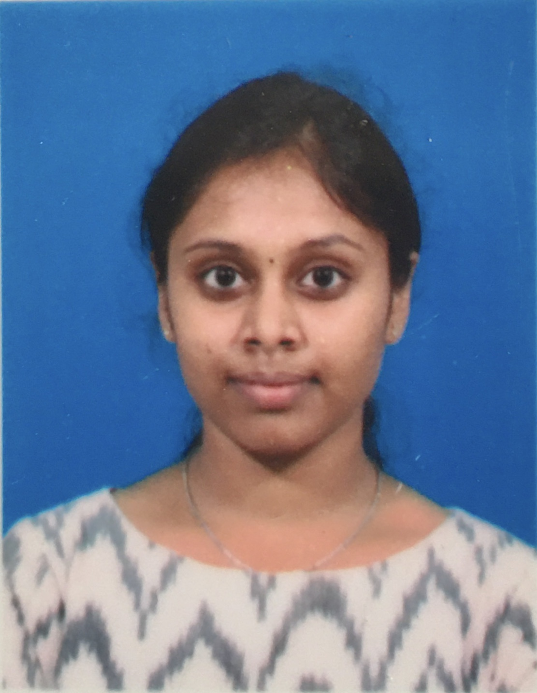
Ms. Samyuktha
Roll No. ai23mtech02004
Camera-Radar Fusion for enabled ADAS system
Alumni

Mr. Amit Kumar Singh
Roll No. ai22mtech12010
GPS denied Navigation for UAVs
Alumni
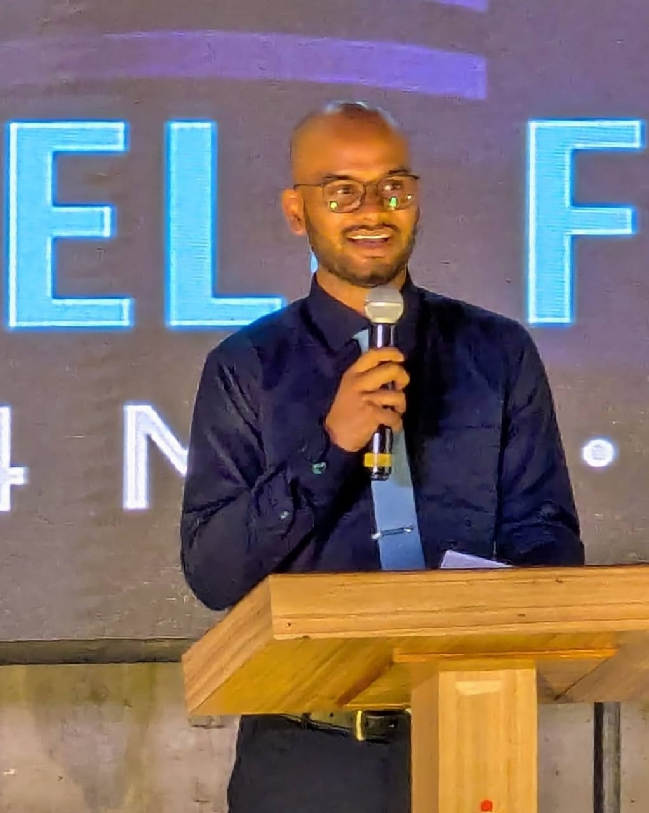
Mr. Rishav Kumar
Roll No. ai22mtech12003
Multi-Modal Fusion for Object Detection
Alumni
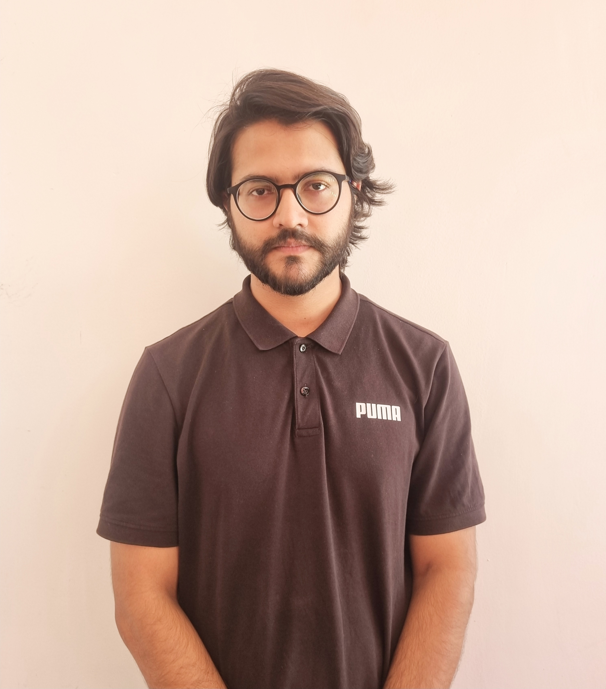
Mr. Manas Upadhyaya
Roll No. sm22mtech12002
Autonomous E-bike Micro Mobility
Alumni
Mr. Kshitiz Kumar
Roll No. ai22mtech02002
Learning Pedestrian Actions to Ensure Safe Autonomous Driving
Alumni

Mr. Anuj Arora
Roll No. sm22mtech14002
Mapping and Navigation on roots vehicle
Alumni
Mr. Nitish Kumar
Roll No. ee22mtech02005
Sensor Fusion and RADAR based Navigation for Autonomous Vehicles
Alumni
Mr. Tuhin Dutta
Roll No. ai21mtech02002
ADAS for point navigation system for autonomous car adaptable to Indian scenarios
Alumni
Mr. Harshal Verma
Roll No. ai21mtech01003
LiDAR-Camera sensor fusion
Alumni
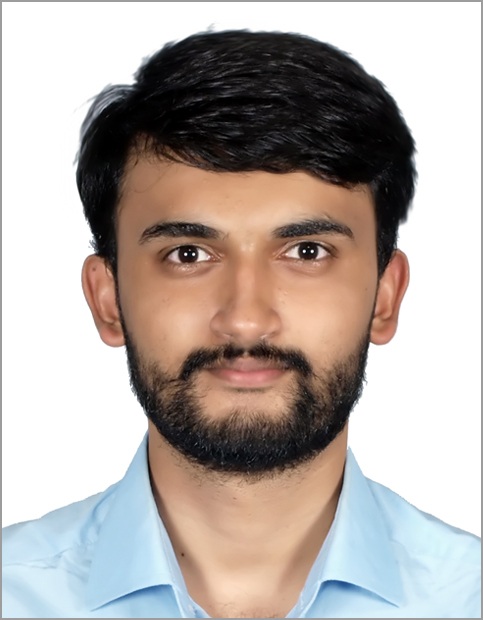
Mr. Shantanu Yadav
Roll No. ee20mtech12001
ADAS System Design for Autonomous Vehicles using Radar Signal Processing
Alumni
Mr. Rishabh Bhardwaj
Roll No. sm21mtech12007
Enhancing Autonomous Vehicle Capabilities: Drive-by-Wire Integration, Pedestrian Intent Estimation, and Collision Mitigation Systems Simulation in Carla
Alumni
Mr. Hari Nagaraja Srikanth
Roll No. sm21mtech12012
Enhancing Autonomous Vehicle Navigation with Real-Time Pothole Detection and Simulation-based Collision Warning Systems
Alumni
Mr. Deeshant Sharma
Roll No. ee21mtech14002
An Integrated Framework for UAVs: Localization, Mapping, and Navigation in GPS-Denied Environments
Alumni
Mr. G Venkata Ujwal Sai
Roll No. ai20mtech01001
Vision based Segmentation and Navigation for Unmanned Aerial Vehicles
Alumni
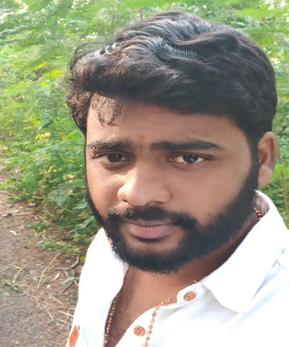
Mr. Perabhattula Venkatesh
Roll No. ai20mtech01004
Computer-Vision based ADAS applications for Autonomous Vehicles in India
Alumni
Mr. Vipul Kumar Malik
Roll No. ai20mtech14006
Auto Adjustable Traffic Controller enabled with Special Vehicle Assistance System
Alumni
Mr. Surya Pratap Singh Shekhawat
Roll No. sm20mtech12006
Autonomous Navigation of Drone Swarm
Alumni

Mr. Abhishek Singh
Roll No. sm20mtech12013
Radar with camera integration and GPS/IMU-based navigation of the ground vehicle
Alumni
Mr. Shreeshan S
Roll No. ee19mtech01007
Automated plant phenotyping using UAV based RGB Images and Point Cloud data
Alumni
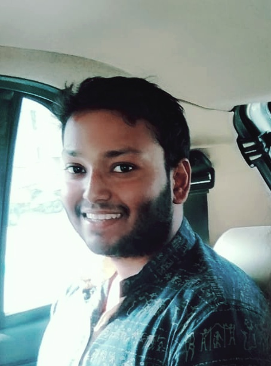
Mr. Subhra Shankha Bhattacherjee
Roll No. ee19mtech01008
Automated Region of Interest Segmentation Pipeline for UAV based RGB Images
Alumni
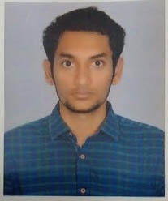
Mr. Poluri Nikhil Koundinya
Roll No. ee18mtech11031
Multi-Sensor Perception and Control for Autonomous Navigation
Alumni
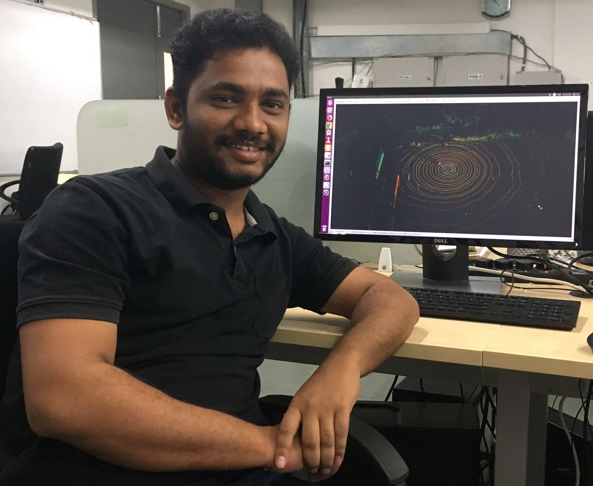
Mr. Mrinal Senapati
Roll No. ee18mtech11025
LiDAR Point Cloud Processing for Autonomous Navigation
Alumni
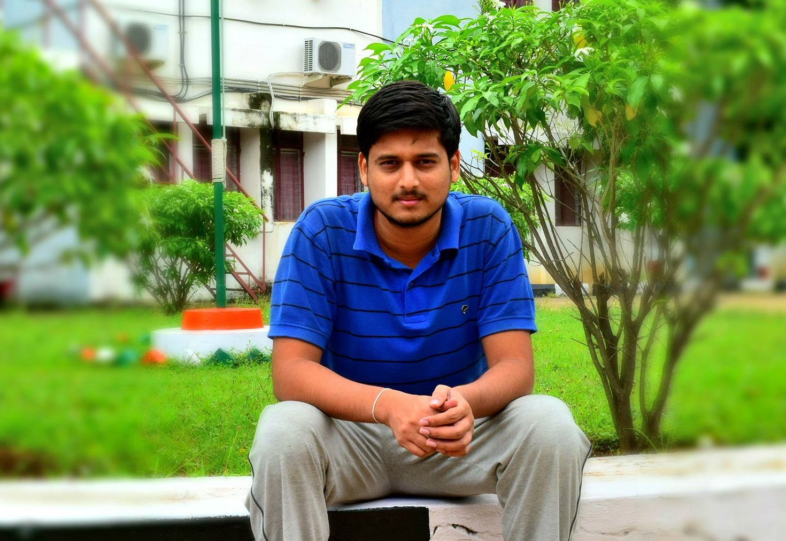
Mr. Vivek Barsaiyan
Roll No. ee18mtech11028
LiDAR Point Cloud Processing for Traffic Sensing
Alumni
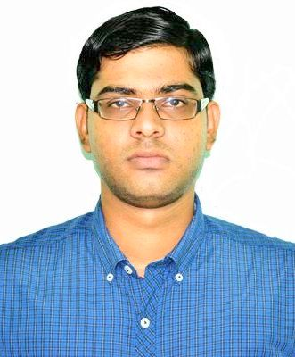
Mr. Pradeep Kumar Mishra
Roll No. ee16mtech11039
A Study of Manifold Learning Methods for Multiclass Motor Imagery Classification
Alumni
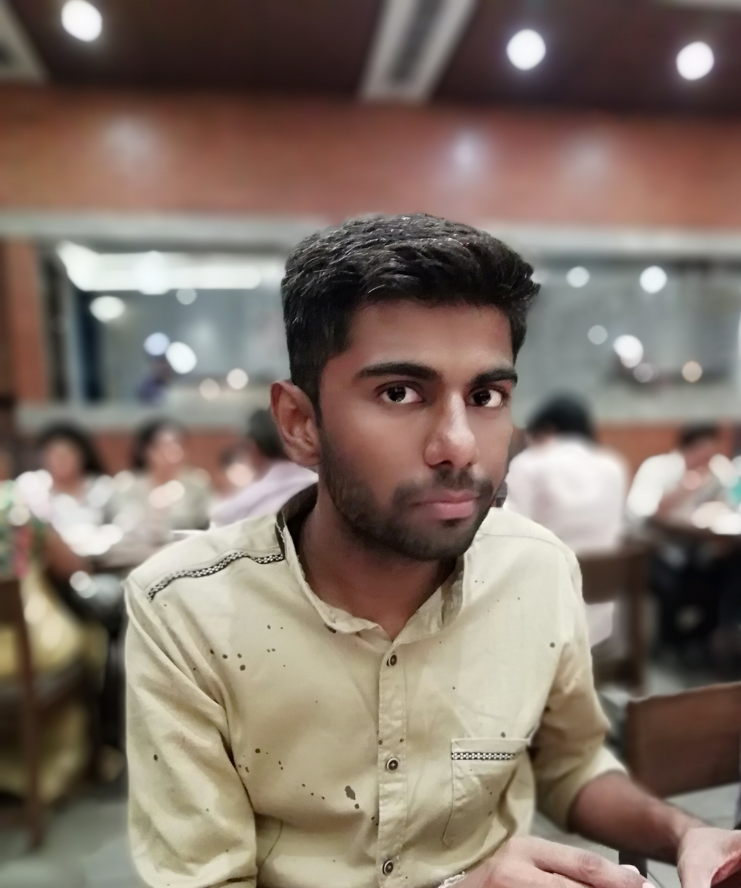
Mr. Mahesh Taparia
Roll No. ee18mtech11025
Canopy Coverage Estimation & Tassel Detection Using UAV-Based Remote Sensing and Crop-Weed Segmentation Using Static Images
Alumni
Mr. K.V.V. Durga Prasad
Roll No. ee14mtech11023
Design and Development of Energy Efficient Algorithms for Smart Agriculture
Alumni
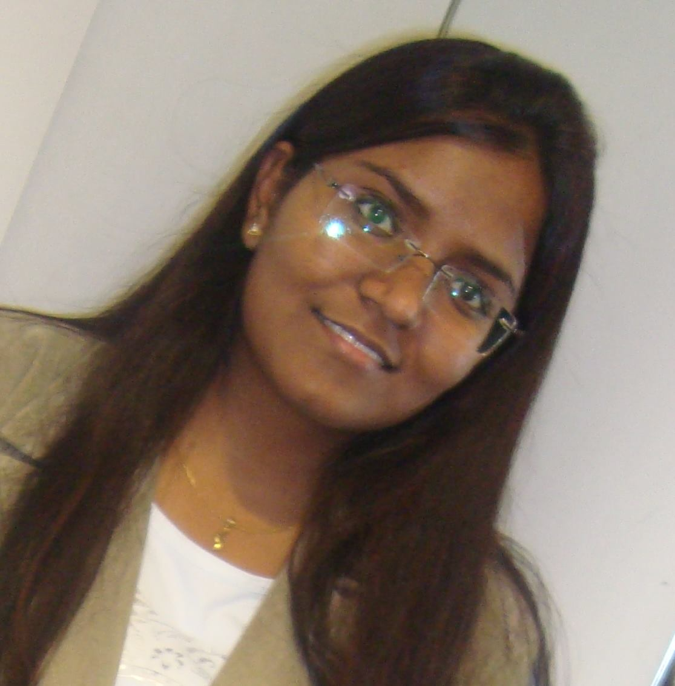
Ms. Pallavi Vaish
Roll No. ee15mtech01001
Smartphone Based Automatic Diagnostic Healthcare System
Alumni
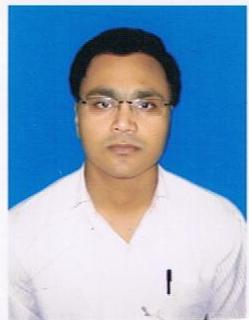
Mr. Punit Kumar
Roll No. ee15mtech01002
FPGA Prototyping of Ultrasound Signal Processing and Ultrasound Front-end Processing Hardware development
Alumni

Mr. Abhishek Anand
Roll No. ee14mtech11040
Compressive Sensing Implementation In a Wireless Sensor Network Environment
Alumni
Mr. Mude Nagarjuna Naik
Roll No. ee15mtech11007
Design and development of Wireless Sensor Network for Real time remote monitoring
Alumni
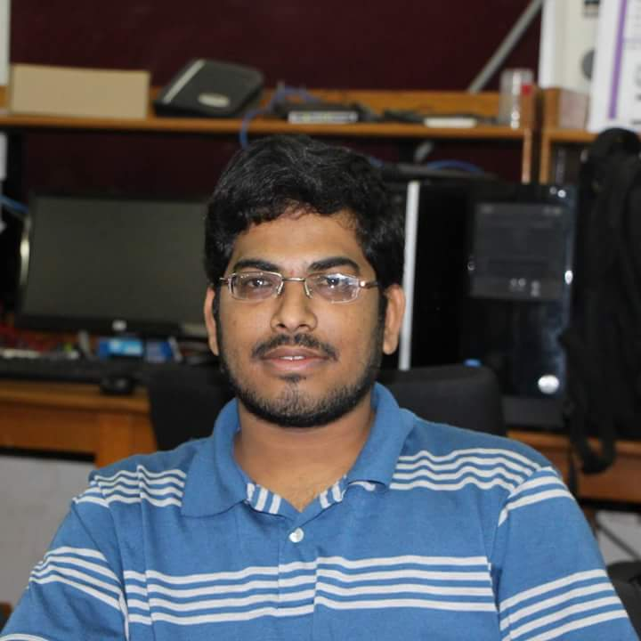
Mr. Atche Dileepkumar
Roll No. ee1a4mtech01002
IoT-Enabled Applications in Wireless Sensor Networks
Alumni
Mr. Mohammed Abdullah Zubair
Roll No. ee14mtech01003
Alumni

Mr. Arun Kumar
Roll No. ee14mtech11002
Ultrasound Mid-end Processing on Android Platform
Alumni
Mr. Subrahmanyam Vuddagiri
Roll No. ee14mtech11012
Avenues in IEEE802.15.4 MAC and PHY Layers
Alumni
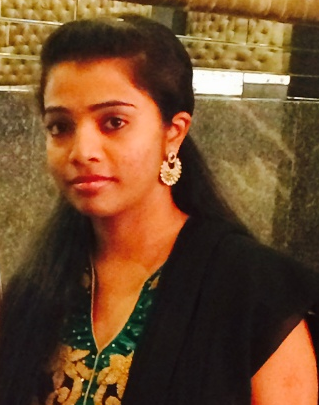
Ms. K Divya Krishna
Roll No. ee13m0003
Computer-Aided Diagnosis and Smart Video Validation on IoT-Enabled Portable Ultrasound System
Alumni
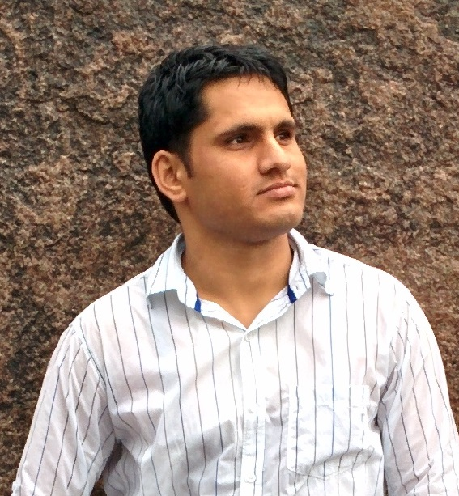
Mr. Vinod Kumar Netad
Roll No. ee13m1033
3D Localization Techniques using RSSI with a Mobile Robot
Alumni
Mr. Dusa Chandrashekar
Roll No. ee12m1014
Portable Ultrasound Data Acquisition System Design
Alumni
Mr. Vivek Akkala
Roll No. ee12m1041
Computer Aided Diagnosis on customized Ultrasound Imaging system
Alumni
Mr. Malyala Pavana Ravi Sai Kiran
Roll No. ee12m1021
Design and Development of Smart, Intelligent & IoT Enabled Remote Health Monitoring System
Alumni
Mr. Alok Kumar Bharati
Roll No. EE09G001
WSN Based Power Monitoring for Smart Grids
Alumni
Saambhavi V.B
Roll No. EE10M09
Design of Voice-Controlled Intelligent Robot
Alumni
—
Roll No. EE10M14
RSSI Based Indoor Passive Localization For Intrusion Detection And Tracking
Alumni
—
Roll No. EE11M09
LTE Baseband Algorithms For Uplink
Alumni
Mr. M. Arvind
Roll No. ai25resch11002
Autonomy
Current
Ms. Deepsika Urmiliya
Roll No. ai25resch11006
Autonomy
Current
Mr. Palanivel
Roll No. ee24resch14001
Autonomy
Current
Mr. Mohan K R K
Roll No. ai23resch14001
Out of Distribution detection for Perception in Autonomous Navigation
Current

Mr. Abhilash S
Roll No. ee24resch11004
Integrated Sensing and Communication (ISAC) using B5G/6G network
Current
Mr. Adithya V
Roll No. ai23resch11001
Carla simulation
Current
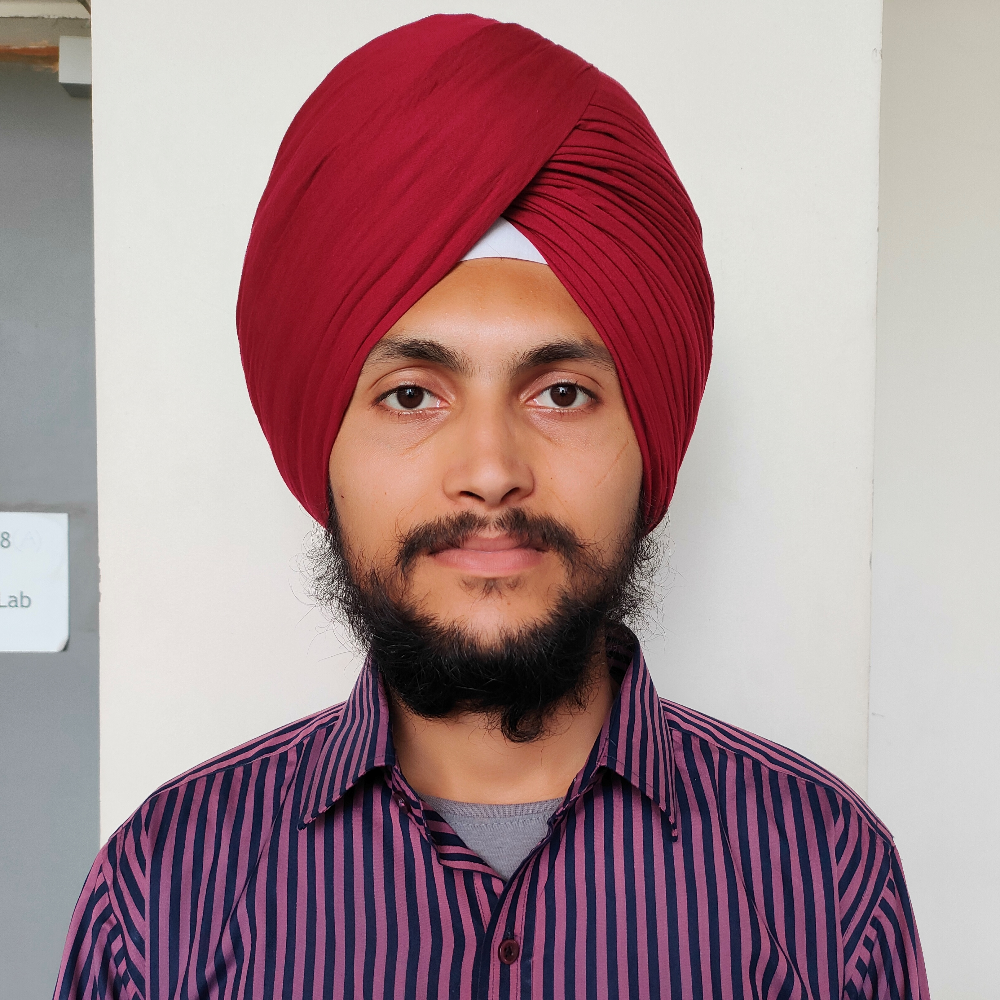
Mr. Gurpreet Singh
Roll No. id21resch11029
Autonomous and Intelligent IoT Access Control Model
Current
Mr. S Abhilash
Roll No. ai21resch11004
Automated Driving Incorporating Naturalistic Driving Study for Futuristic Vehicles
Current

Ms. Annu
Roll No. ee21resch01010
Cooperative Intelligent Transport System Using V2X Communications
Current
Ms. Joyti Ganesh Kale
Roll No. ai21resch14004
Intelligent Transportation Systems
Current
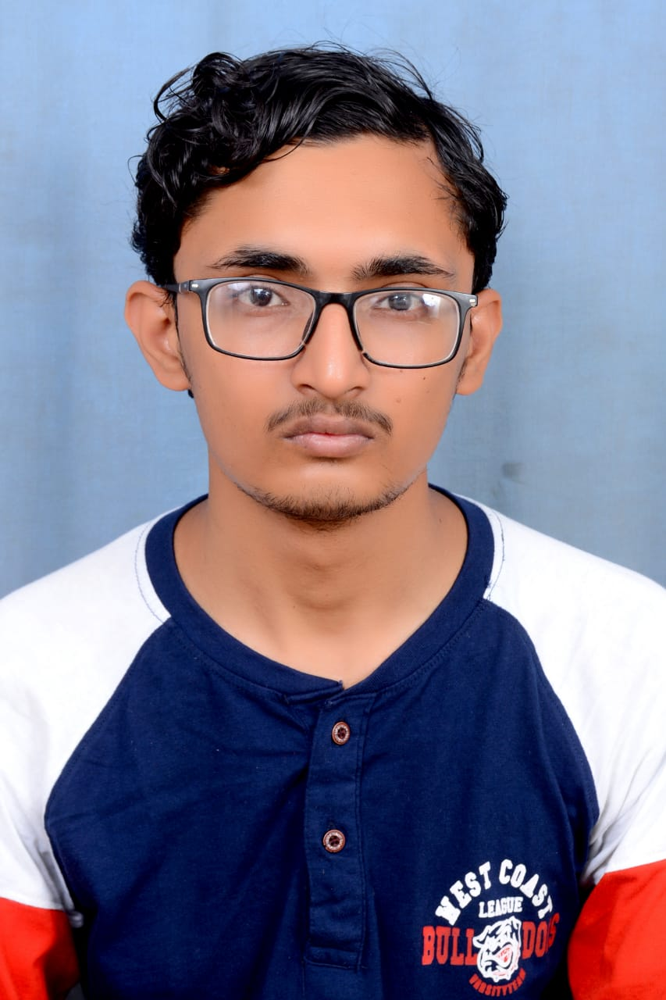
Mr. Parvez Alam
Roll No. ai21resch01005
Perception using LiDAR for Autonomous Systems
Current
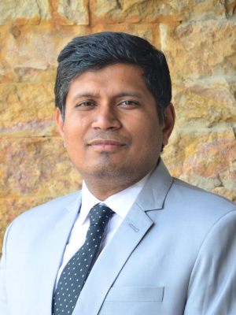
Mr. S Girish Ramachandruni
Roll No. ee20resch14005
Operational Data Links for UAV/UCAV
Current
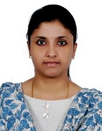
Ms. Sandhya Addetla
Roll No. ai20resch14001
Advanced Network Security Defense Systems Leveraging Big Data Analytics
Current
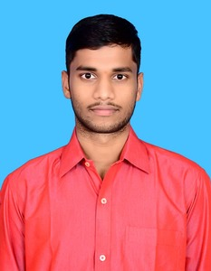
Prasanth Kumar Duba
Roll No. ee20resch11008
GPS-denied Navigation and Guidance of Unmanned Aerial Vehicles (UAVs)
Current
Dr. Abhishek Thakur
Roll No. ee20resch11014
Sensor Fusion for Autonomous Navigation
Alumni
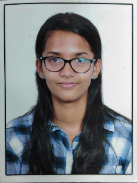
Dr. Tejasri
Roll No. ai19resch11002
Drone based image processing for High throughput phenotypes
Alumni
Dr. Adduru Sankar Rao
Roll No. ee19resch11004
Hyperspectral Imaging for High throughput phenotyping for Drone based sensing
Alumni
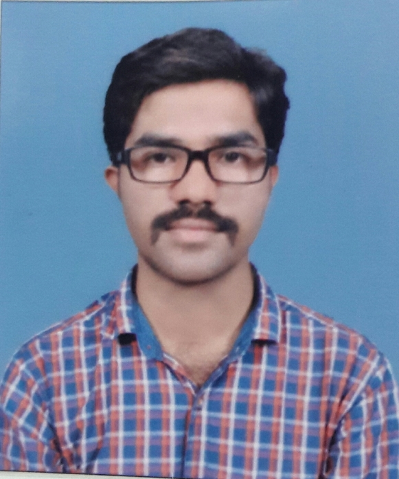
Dr. Sanju Kumar N T
Roll No. ee19resch01006
AI Frameworks for Autonomous Passenger Drones using Lidar Sensors
Alumni
Dr. G. Priyanka
Roll No. ee18resch11007
AI Driven High Throughput Phenotyping to Accelerate Crop Improvement through Crop-images Captured from UAV with On-Vehicle Sensors
Alumni
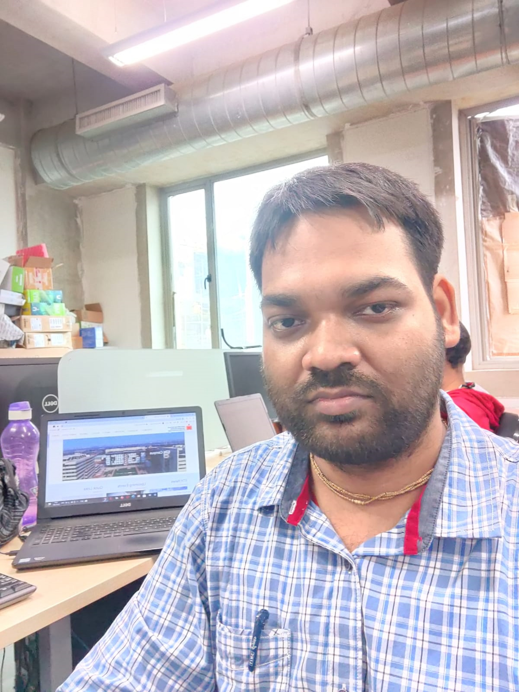
Dr. Bhaskar Anand
Roll No. ee18resch11006
AI Driven Smart and Autonomous Transportation Using LiDAR Point Cloud
Alumni

Dr. Ajay Kumar
Roll No. ee16resch01002
High Throughput Crop Phenotyping and Management Using UAV Based Remote Sensing
Alumni
Dr. Ajay Kumar Nain
Roll No. ee15resch11005
Securing Internet of Things: A physical layer perspective
Alumni
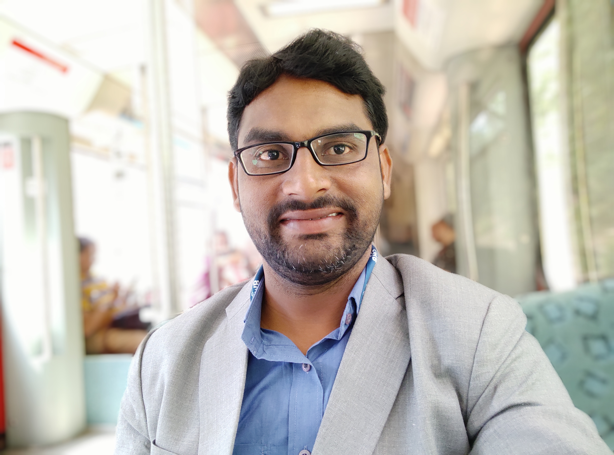
Dr. B. Jagadish
Roll No. ee15resch02010
Brain Controlled IoT Enabled Environments: Theory and Experiments
Alumni

Dr. D. Santhosh Reddy
Roll No. ee12m1021
Low-complex AI Architectures for IoT Enabled Intelligent Hand-held Ultrasound
Alumni
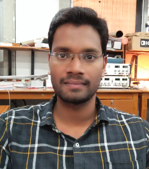
Dr. M. P. R. Sai Kiran
Roll No. ee15resch02002
Modeling and Analysis of Dense Traffic IoT Networks
Alumni
Dr. Akshay Jadhav
Roll No. ee14resch11001
Self-sustaining IoT Networks
Alumni
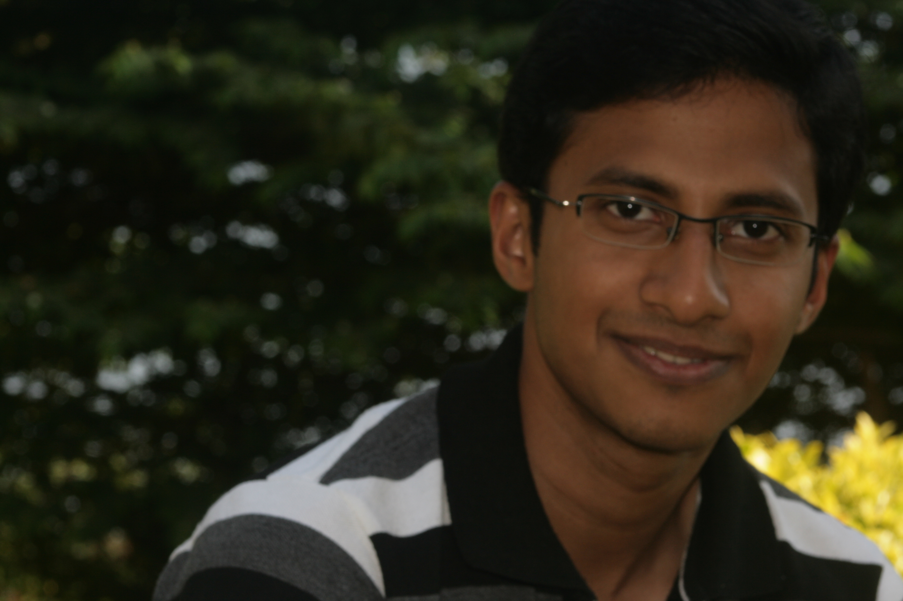
Dr. Francis K Joseph
Roll No. ee14resch12001
Photoacoustic Imaging: Theory, Modelling and Experiments
Alumni
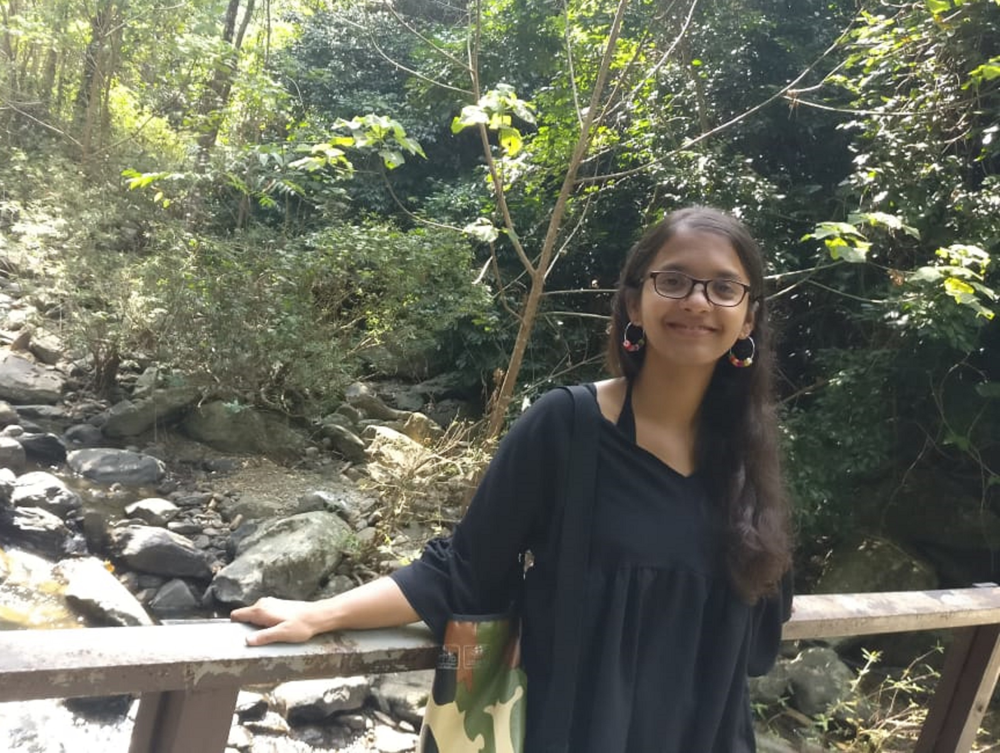
Dr. M. Tejaswini
Roll No. ee13p1003
Human Mobility Based Mobile Phone Sensing Networks
Alumni
Dr. M. Amarlingam
Roll No. ee13p0007
Low-complexity Data Aggregation Methods for Energy-constrained IoT Networks using Compressed Sensing Framework
Alumni
Dr. Ramkrishna Bharath
Roll No. ee10p006
Computer assisted Algorithms for Ultrasound Imaging Systems
Alumni
Dr. Raja Vara Prasad
Roll No. ee10p004
Modified IEEE 802.15.4 MAC with Integrated State Behaviour Model for High Density Traffic IoT Applications
Alumni
Dr. Paraz Upadhyay
TiHANPDF09
Dynamic computational offloading using 6G network
Current
Dr. Sanju Kumar
TiHANPDF07
Drone-Based Building Inspection, Task Management System, and Heavy Payload (PAV-2) Drone Tuning & Testing
Current
Dr. Manoj
TIHANPDF08
Multi-Sensor Fusion in Autonomous Vehicles: Radar and Camera Perspective
Current
Dr. Kratika Yadav
TIHANPDF01
App interface for multimodal transportation
Alumni
Dr. Phaneendra Pydimarri
TiHANPDF03
CV2X (TS004), 6G, MPC controller, SDV
Alumni
Dr. Korra Balu
TiHANpdf04
Drive-by-Wire
Alumni
Dr. Chandras Singh
TIHANPDF05
UAV design and development for various applications
Alumni
Dr. Shivangi Singh
TiHANPDF06
Testing & Validation of Autonomous Ground Vehicles
Alumni
Dr. A UG Sankar Rao
EE25PDF01
UAV Based Hyperspectral Image Analysis for Crop Phenotyping
Alumni
Dr. Naga Praveen Babu
EE20PDF09
Design and Development of Multi-modal transportation systems (AGVs, UAVs, ASVs, and AUVs)
Alumni
Dr. Amar Kumar Verma
EE21PDF18
ADAS and Connected Automated Vehicles Scenarios at TiHAN Testbed – Field Tests
Alumni
Dr. Saikiran
NA
NA
Alumni
Dr. Adarsh
EE21PDF14
Design and development of prototype UAV
Alumni
Dr. Akshay Kumar
EE21PDF15
Sensor & Actuation Integration for Autonomous Navigation in Ground Vehicle
Alumni
Dr. D. Santhosh Reddy
EE21PDF17
Autonomous Ground Vehicles
Alumni
Dr. Swapna
EE22PDF03
Autonomous Navigation for Aerial / Ground Vehicles
Alumni
Dr. Ramarajan
EE22PDF06
UAV-Passenger drone
Alumni
Dr. Rahul Dubey
EE22PDF07
Field of View Studies / Camera Range Studies / Heavy Payload Drone / Structural Analysis of Hexaframe
Alumni
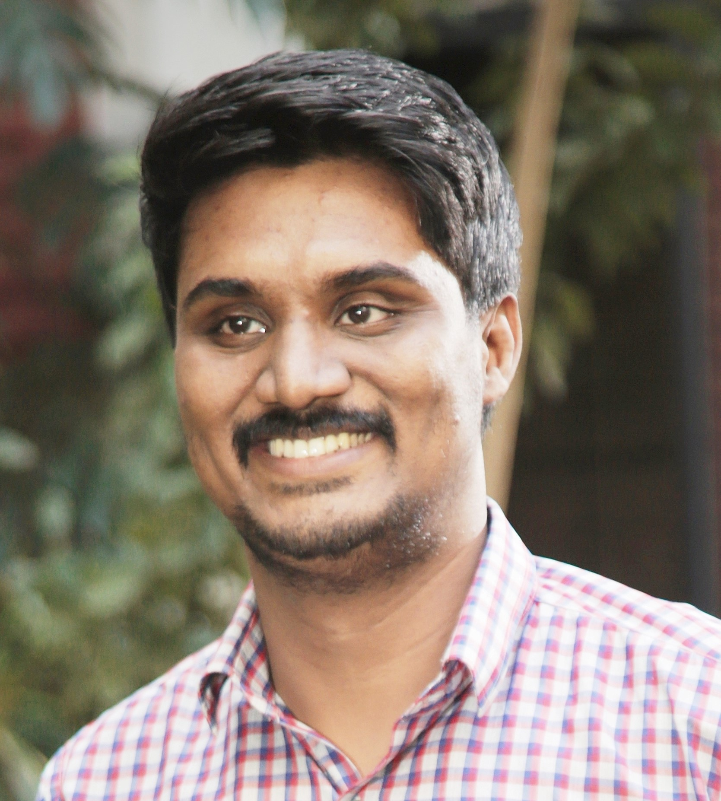
Dr. Syam Narayanan
EE22PDF08
Autonomous navigation of UAV
Alumni
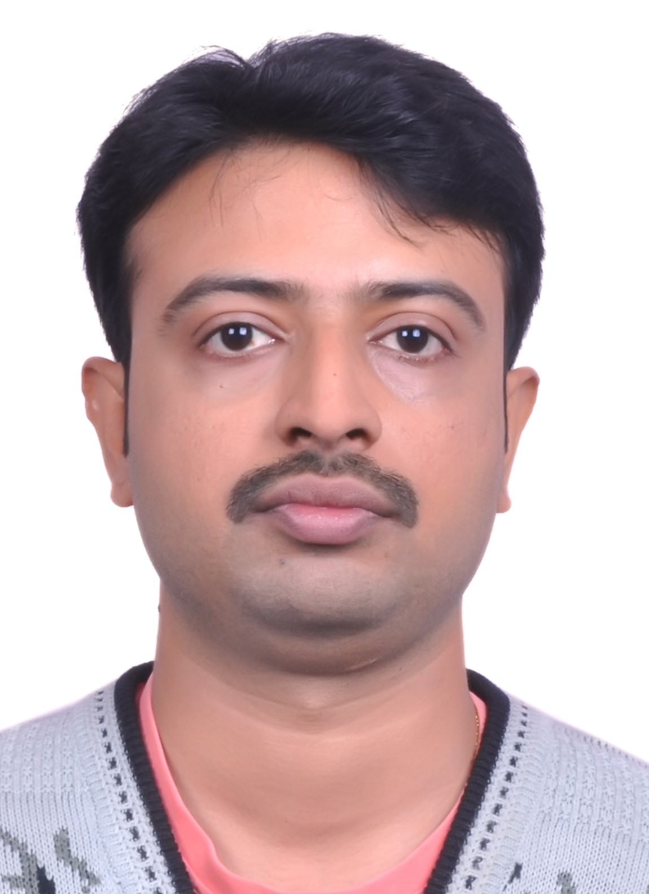
Dr. Venkata Satyanand Mutnuri
EE23PDF02
Activities and Skill Development Programs
Alumni
Dr. Swapnil Shinde
EE23PDF03
Campus shuttle and DBW Development
Alumni
Dr. Syed Thouheed Ahmed
EE23PDF04
Edge Computing
Alumni
Dr. Bhaskar Anand
EE23PDF06
Real-Time Edge Computing Architectures for LiDAR based Intelligent Transportation Systems
Alumni